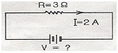
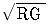
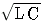
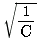
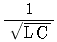
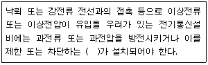

정보기기운용기능사 (2010-07-11 기출문제)
1과목: 전산 기초 이론
1. CPU와 주기억장치의 속도차를 줄여 CPU의 효율을 높이고 시스템의 성능을 향상시키기 위해 고안된 기억장치는?
- 캐시 메모리
- 가상 메모리
- 메인 메모리
- 보조기억장치
(정답률: 84%)

2. 자주 사용하는 소프트웨어의 주요 부분을 메모리인 ROM에 저장하여 하드웨어로 구성한 것은?
- 그룹웨어(groupware)
- 펌웨어(firmware)
- 미들웨어(middle ware)
- 패키지소프트웨어(package software)
(정답률: 83%)
3. -13을 8비트의 2의 보수 방식으로 표현하면?
- 00001101
- 10000011
- 11110010
- 11110011
(정답률: 63%)
4. 다음 중 운영체제의 목적과 거리가 먼 것은?
- 처리 능력의 향상
- 신뢰도의 향상
- 응답 시간의 단축
- 프로그램의 용이성
(정답률: 59%)
5. 프로그래밍(programming) 언어에 해당되지 않은 것은?
- UNIX
- C
- JAVA
- COBOL
(정답률: 75%)
6. 일반적인 플로피 디스크의 저장 용량은 1.44MB이다. 저장 용량이 50GB인 하드 디스크의 저장 용량은 약 몇 장의 플로피 디스크 용량과 같은가?
- 3500
- 7000
- 35000
- 70000
(정답률: 72%)
7. 컴퓨터에서 입출력 동작 속도는 중앙 연산처리의 동작보다 느리다. 이 동작 속도의 차에 의한 유휴 시간을 줄이기 위하여 중앙처리장치와 입출력장치 사이에 설치하는 것은?
- 채널(channel)제어장치
- 인덱스 레지스터(index register)
- 디스플레이(display) 장치
- 병렬연산장치
(정답률: 78%)
8. JAVA 언어에서 클래스로부터 객체를 생성할 때 사용하는 예약어는?
- create
- method
- new
- object
(정답률: 62%)
9. 하나의 로직 레벨을 다른 논리 레벨로 변환하는 gate는?
- NOT
- AND
- OR
- NAND
(정답률: 69%)
10. 연산장치ALU)의 연산결과를 일시적으로 기억하는 레지스터는?
- 명령어 레지스터
- 누산기
- 주소 레지스터
- 상태 레지스터
(정답률: 79%)
2과목: 정보 기기 운용
11. 다음 그림에서 전지의 전압은?

- 2[V]
- 3[V]
- 5[V]
- 6[V]
(정답률: 82%)
12. 바이러스(virus)가 주는 피해가 아닌 것은?
- 프로그램의 실행 속도 저하
- 부팅 속도의 저하
- 기억장치의 연결 케이블 파괴
- CMOS 셋업 내용의 삭제 또는 변경
(정답률: 83%)
13. 최초의 휴대전화용 바이러스는?
- 카비르
- YANKEEDOOELE
- MSU
- 브레인 바이러스
(정답률: 66%)
14. 전자우편의 구성 요소 중 송/수신 메시지를 저장하여 검색할 수 있는 기술은?
- 워드프로세싱 기술
- DBMS 기술
- 네트워크 기술
- O/S 및 인터페이스
(정답률: 63%)
15. 팩시밀리의 종유 중 A4 한 장을 기준으로 해서 전송속도가 5초 이내인 것은?
- G1
- G2
- G3
- G4
(정답률: 73%)
16. 데이터베이스 시스템에 대한 설명으로 옳지 않은 것은?
- 데이터 보안에 어려움이 따른다.
- 시스템이 복잡하다.
- 시스템 고장에 따른 영향이 작다.
- 운영비가 많이 든다.
(정답률: 79%)
17. DSU(Digital Service Unit)의 설명 중 틀린 것은?
- 디지털 정보를 변환 과정 없이 그대로 전송하기 위한 장치이다.
- PPPoE 방식의 프로토콜을 사용한다.
- 단극형 신호를 양극형 신호로 바꾸어 준다.
- 모뎀처럼 교류신호로 변환하지 않는다.
(정답률: 50%)
18. 저항 4[Ω]과 6[Ω]이 병렬로 접속되어 있을 때 합성 저항 값은?
- 2[Ω]
- 2.4[Ω]
- 4.8[Ω]
- 10[Ω]
(정답률: 70%)
19. 사무자동화의 기능이 아닌 것은?
- 문서화 기능
- 통신 기능
- 정보 활용 기능
- 업무처리 수동화 기능
(정답률: 78%)
20. FDMA(Frequency Division Multiple Access) 방식의 특징이 아닌 것은?
- LSI화에 적합하여 소형화가 쉽고, 데이터 효율이 높다.
- 저속도의 비동기에 주로 사용하며, 비교적 구조가 간단하고 저렴하다.
- 인접 채널 간의 간섭을 줄이기 위한 보호 대역이 필요하므로 대역폭의 낭비가 생긴다.
- 주파수를 여러 개의 작은 대역폭으로 나누어 다수의 저속 장비를 동시에 연결하여 사용할 수 있다.
(정답률: 42%)
21. “임의의 접속점에 유입되는 전류의 합과 유출되는 전류의 합은 같다.”라고 정의한 법칙은?
- 쿨롱의 법칙
- 줄의 법칙
- 키르히호프의 법칙
- 옴의 법칙
(정답률: 71%)
22. 최고 경영자의 의사 결정을 도와주는 시스템으로 End-User 지원 시스템이라고도 하는 것은?
- POS
- CRM
- EDS
- DSS
(정답률: 46%)
23. 반복되는 작업을 쉽게 하기 위해 특정키에 일련의 작업을 기억시켜 필요시 연속적으로 실행시키는 기능은?
- 매크로(Macro)
- 병합(Merge)
- 레이아웃(Layout)
- 정렬(Align)
(정답률: 87%)
24. 전지(cell)의 종류는 1차 전지와 2차 전지로 나눌 수 있다. 1차 전지와 2차 전지를 구분하는 가장 큰 특징은?
- 축전지의 저장용량
- 전지의 재사용 여부
- 전지의 연결방법
- 전지의 크기
(정답률: 72%)
25. 컴퓨터실 작업환경이나 작업태도의 설명으로 틀린 것은?
- 전산실의 조명은 500[Lux] 정도가 적당하다.
- 50분 작업에 10~15분 정도 휴식을 취하는 것이 좋다.
- 눈에서 화면까지의 이상적인 거리는 45~50[cm]가 가장 적당하다.
- 휴식시간에도 화면을 계속 주시하여 눈의 피로를 풀게 한다.
(정답률: 86%)
26. 인터넷상의 불특정 다수 수신인에게 무더기로 송신된 전자우편( e-mail) 메시지는?
- 그룹 메일
- 스팸(spam)
- 스푸핑(spoofing)
- 스캔(scan)
(정답률: 85%)
27. 통신선로를 효율적으로 사용하고 회선비를 줄이기 위한 장치는?
- 모뎀
- DSU
- 음향결합기
- 다중화기
(정답률: 63%)
28. 매 순간마다 연속적으로 변화하는 파형을 사인파 형태로 나타낸 교류 값은?
- 최대값
- 실효값
- 평균값
- 순시값
(정답률: 64%)
29. 시분할 다중화기에 대한 설명으로 틀린 것은?
- 동기형과 비동기형으로 구분할 수 있다.
- point-to-point 시스템에 가장 많이 사용된다.
- 1200baud 이하의 비동기에서 주로 이용한다.
- 별도의 버퍼가 필요하다.
(정답률: 72%)
30. 자기테이프에 논리레코드 단위로 데이터를 기록시킬 때 레코드와 레코드 사이에 생기는 여백(gab)은?
- IRG
- IBG
- track
- sector
(정답률: 62%)
3과목: 정보 통신 일반
31. 다음 중 외부 잡음의 영향을 가장 적게 받는 것은?
- STP 케이블
- M/W 무선경로
- 광섬유 케이블
- 동축 케이블
(정답률: 77%)
32. 다음 중 1회의 변조로 3비트의 표현이 가능한 변조 방식은?
- 2진폭편이 변조방식
- 위상편이 변조방식
- 4위상편이 변조방식
- 8위상편이 변조방식
(정답률: 66%)
33. 다음 중 일정량의 자료를 모은 후에 처리하는 방식은?
- 원격처리(teleprocessing)
- 실시간처리(real time processing)
- 일괄처리(batch processing)
- 온-라인처리(on-line processing)
(정답률: 89%)
34. 다음 중 e=200sin(120πt+t/3)인 파형의 주파수는?
- 20[Hz]
- 40[Hz]
- 60[Hz]
- 80[Hz]
(정답률: 61%)
35. 이동통신의 접속 방식에 이용되는 CDMA 방식은?
- 시분할 다원접속
- 주파수분할 다원접속
- 코드분할 다원접속
- 공간분할 다원접속
(정답률: 69%)
36. 다음 중 4진 PSK 변조에서 2400[baud]의 변조속도인 경우, 전송속도는?
- 1200[bps]
- 2400[bps]
- 4800[bps]
- 9600[bps]
(정답률: 71%)
37. 오류, 동기 및 흐름 제어 등의 각종 제어 절차에 관한 사항을 나타내는 프로토콜의 기본적인 요소는?
- 타이밍
- 구문
- 의미
- 처리
(정답률: 42%)
38. 광섬유 케이블의 전송은 빛의 어떤 특성을 이용하는 것인가?
- 산란
- 굴절
- 회절
- 전반사
(정답률: 74%)
39. 다음 중 통신선로에 전송되는 통신신호의 전파속도(V)는?(단, R:선로의 저항, L:선로의 인덕턴스, C:선로의 정전용량, G:선로의 누설 컨덕턴스)




(정답률: 59%)
40. 다음 중 방송망으로 이용되지 않은 것은?
- 패킷 라디오망
- 인공 위성망
- 근거리 통신망
- 메시지 교환망
(정답률: 64%)
41. MPEG는 멀티미디어 기술 중 어디에 해당하는가?
- 전달기술
- 표현기술
- 압축기술
- 변조기술
(정답률: 66%)
42. 다음 중 PCM의 송신측 계통이 순차적으로 옳은 것은?
- 표본화→압축→복호화→양자화
- 표본화→압축→양자화→부호화
- 양자화→압축→표본화→복호화
- 양자화→표본화→압축→부호화
(정답률: 76%)
43. 다음 중 전송 선로의 무왜곡 조건은?(단, R:저항, C:정전용량, G:누설컨덕턴스, L:인덕턴스)
- RC = LG
- R-L = C-G
- RG = LC
- R+L = C+G
(정답률: 71%)
44. 다음 중 성능이 좋고 여러 비트에서 발생하는 집단오류도 검출 가능한 방식은?
- 패리티 검사(Parity Check)
- 전진 에러 수정(FEC)
- 블록합 검사(BSC)
- 순환 잉여 검사(CRC)
(정답률: 62%)
45. 주파수 분할 다중화(FDM)에 대한 설명으로 틀린 것은?
- 진폭편이 변조방식만을 사용
- 시분할 다중화에 비해 비교적 간단한 구조
- 재생증폭기는 전체 채널에 하나만 필요
- 진폭 등화를 동시에 수행
(정답률: 34%)
46. 가입자가 시간에 관계없이 특정한 프로그램을 선택하여 시청할 수 있으며, 마치 VCR을 자유로이 조작하듯 시청 도중에 플레이(재생), 되감기, 일시정지, 녹화 등이 가능한 뉴미디어 서비스는?
- CATV
- VAN
- VOD
- LAN
(정답률: 74%)
47. 통신 프로토콜에 관한 설명으로 가장 적합한 것은?
- 데이터 길이, 전송 속도, 데이터 단위 등을 규정한 법이다.
- 정보를 보내거나 받을 수 있는 두 개체 간에 무엇을, 어떻게, 언제 통신할 것인가에 대하여 서로 약속한 절차이다.
- 국제 초고속정보통신망의 이용절차에 관한 지침이다.
- 정보통신망 시스템구성과 운용에 관한 이용규정이다.
(정답률: 71%)
48. 네트워크 형태 중 성형에 관한 설명으로 틀린 것은?
- 별모양의 네트워크이다.
- 중앙에 호스트 컴퓨터가 있고 이를 중심으로 단말기가 1:1로 연결되어 있는 형태이다.
- 중앙 시스템의 고장시 전체에 영향을 줄 수 있다.
- 모든 제어는 단말기에 의해 이루어지는 분산제어방식이다.
(정답률: 61%)
49. 다음 중 데이터 통신시스템의 전송계에 속하지 않는 것은?
- 전송회선
- 신호변환기
- 통신제어장치
- 중앙처리장치
(정답률: 69%)
50. 다음 중 DTE와 DCE의 물리적 인터페이스의 일반적 특성이 아닌 것은?
- 기계적 특성
- 전기적 특성
- 기능적 특성
- 논리적 특성
(정답률: 59%)
4과목: 정보 통신 업무 규정
51. 다음 ( ) 안에 들어갈 내용으로 적합한 것은?

- 차단스위치
- 분기점
- 보호기
- 회로시험기
(정답률: 52%)
52. 전기통신설비가 다른 사람의 전기통신설비와 접속되는 경우에 그 건설과 보전에 관한 책임 등의 한계를 명확하게 하기 위하여 설정 되어야 하는 것은?
- 분계점
- 분기점
- 접속점
- 국선 인입점
(정답률: 80%)
53. 정보통신설비와 이에 연결되는 다른 정보통신설비 또는 이용자설비와의 사이에 정보의 상호전달을 위하여 사용하는 통신규약을 인터넷, 언론매체 등을 활용하여 공개하는 자는?
- 전기통신사업자
- 지식경제부장관
- 방송통신위원회
- 교육과학기술부장관
(정답률: 31%)
54. 전기통신을 행하기 위하여 계통적·유기적으로 연결·구성된 전기통신설비의 집합체를 뜻하는 것은?
- 정보통신설비
- 전기통신설비
- 정보통신망
- 전기통신망
(정답률: 62%)
55. 기간통신사업자가 정하여 공시하는 전기통신역무에 관한 요금 및 이용 조건은?
- 요금규정
- 이용규정
- 시행약관
- 이용약관
(정답률: 76%)
56. 다음 중 전기통신사업법의 목적이 아닌 것은?
- 전기통신사업의 운영을 적정하게 함
- 전기통신사업의 수익성을 증대함
- 전기통신사업의 건전한 발전을 기함
- 이용자의 편의를 도모함
(정답률: 64%)
57. 전기통신기본법 또는 다른 법률에 특별히 규정한 것을 제외하고 전기통신에 관한 사항은 누가 관장하는가?
- KT사장
- 국무총리
- 방송통신위원회
- 지식경제부장관
(정답률: 77%)
58. 부가통신사업을 경영하고자 하는 경우의 절차로 적합한 것은?
- 지식경제부장관에게 신고하여야 한다.
- 지식경제부장관에게 등록하여야 한다.
- 방송통신위원회에 신고하여야 한다.
- 방송통신위원회에 등록하여야 한다.
(정답률: 72%)
59. 다음 중 전기통신사업의 구분으로 옳은 것은?
- 공중통신사업, 사설통신사업, 구내통신사업
- 일반통신사업, 특수통신사업, 공공통신사업
- 유선통신사업, 무선통신사업, 우주통신사업
- 기간통신사업, 별정통신사업, 부가통신사업
(정답률: 76%)
60. 전기통신기본계획에 포함되어야 할 사항이 아닌 것은?
- 전기통신사업의 요금책정에 관한 사항
- 전기통신의 이용효율화에 관한 사항
- 전기통신설비에 관한 사항
- 전기통신사업에 관한 사항
(정답률: 62%)